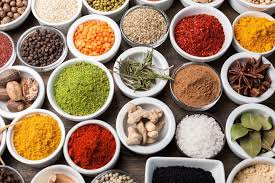
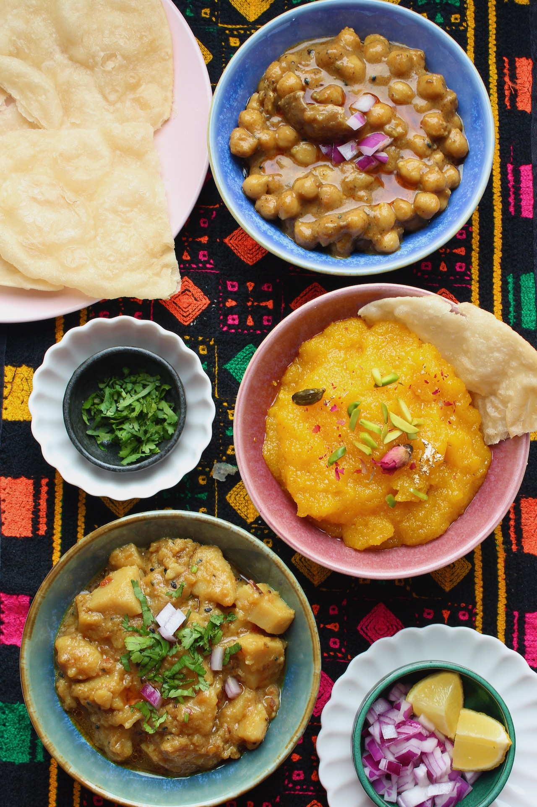
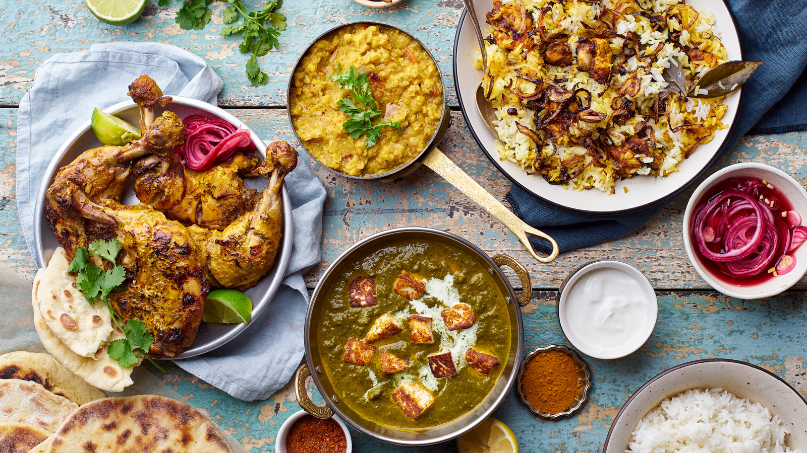
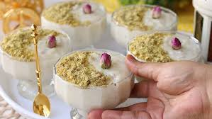
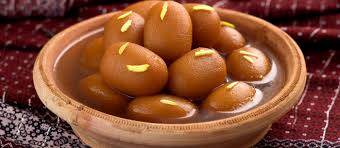
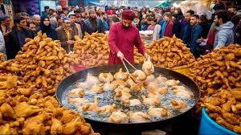
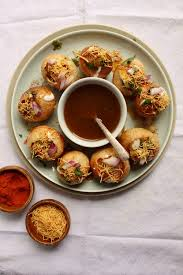

Food

Food Sources & Agriculture:
- Pakistan has a rich gastronomic culture. Food is prepared with love and is an existential part of everyday life. No event is complete without an extensive cuisine.
- Pakistani cuisine has imbibed various local flavours and tastes and was refined by the royal kitchens of 16th century Mughal emperors.
- Pakistan has a large variety of meat dishes compared to the rest of the sub-continent and most of those dishes have their roots in Central Asia, British and Middle Eastern cuisine.
- Pakistani cooking uses spices, herbs and seasonings. Garlic, ginger, turmeric, red chilli and garam masala are used in most dishes, and home cooking regularly includes curry.
- Pakistan's key food crops are wheat, rice, maize, oilseeds, and sugar.
- Agriculture is not yet mechanically advanced in Pakistan so things like land preparation, growing, and harvesting are all done by hand.

Influences on Pakistan's Culture Cuisine:
- Pakistani cuisine has Indian roots (found in the form of the usage of heavy spices), Irani influences, Afghani, Persian, and Western influences.
- Since the Mughal Empire ruled around 1526, Pakistan adopted part of their cuisine that included the herbs and spices, almonds and the raisins in their dishes.
- An example of this is foods such as 'Shahi Tukra', a dessert that is made with sliced bread, milk, cream, sugar, and saffron.
Breakfast in Pakistan:

- A typical Pakistani breakfast called nashta, usually consists of eggs, a slice of loaf bread or roti, parathas, tea or lassi, qeema (minced meat), fresh seasonal fruits, milk, honey, butter, jam, shami kebab or nuts.
- Sometimes breakfast includes baked goods like bakhar khani and rusks.
- During holidays and weekends, halwa poori and chickpeas are sometimes eaten.
- A traditional Sunday breakfast might be 'Siri Paya', the head and feet of lamb/cow, or 'Nihari', a dish which is cooked overnight to get the meat extremely tender.
Lunch in Pakistan:

- A typical Pakistani lunch consists of meat curry or shorba along with rice or a pile of roti or naan.
- Daal chawal is among the most commonly taken dishes at lunch.
- Chicken dishes like chicken karahi are also popular.
- Popular lunch dishes may include aloo gosht (meat and potato curry) or any vegetable with mutton.
- People who live near the main rivers also eat fish for lunch, which is sometimes cooked in the tandoori style.
Dinner in Pakistan:
- Lentils are also a dinnertime staple.
- These are served with roti or naan along with yoghurt, pickle and salad.
- The dinner may sometimes be followed by fresh fruit, or on festive occasions, traditional desserts.
- Dinner is considered the main meal of the day as the whole family gathers for the occasion.
- Food which requires more preparation and are more savoury (such as biryani, nihari, pulao, kofte, kebabs, qeema, korma) are prepared.
Pakistani Desserts:

- Popular desserts include Peshawari ice cream, sheer khurma, kulfi, falooda, kheer, feerni, zarda, shahi tukray and rabri.
- Mithai are consumed on various festive occasions in Pakistan.
- Some of the most popular are gulab jamun, barfi, ras malai, kalakand, jalebi and panjiri.
- Pakistani desserts also include a long list of halvah, such as Multani, hubshee, and sohan halvah.
- Heer made of roasted seviyan (vermicelli) instead of rice is popular during Eid-ul-Fitr.
- Gajraila is a sweet dish made from grated carrots, boiled in milk, sugar, cream and green cardamom, topped with nuts and dried fruit.

Street Food & Snacks:

- Roadside food stalls often sell just lentils and tandoori rotis, or masala tews with chapatis.
- Pakoras are fried vegetable fritters that originated from India and are popular on the subcontinent.
- The recipe includes a mix of onions, potatoes, and other vegetables, finely sliced and mixed with gram flour, chili flakes, water, lemon juice, and chili powder.
- It is usually enjoyed with a glass of masala chai.
- Gol gappay, also knowns as pani puri, is kid of like a crispy crepe shell that is hollowed out to make around shape and filld with imli pani or flavoured water, chaat masala, tamarind hutney, onions, and chili.
